Kumon Level O Test Answers
Select a sheet or question from the horizontal menu below to view the verified answer and mathematical concepts. Click on the image to zoom in.
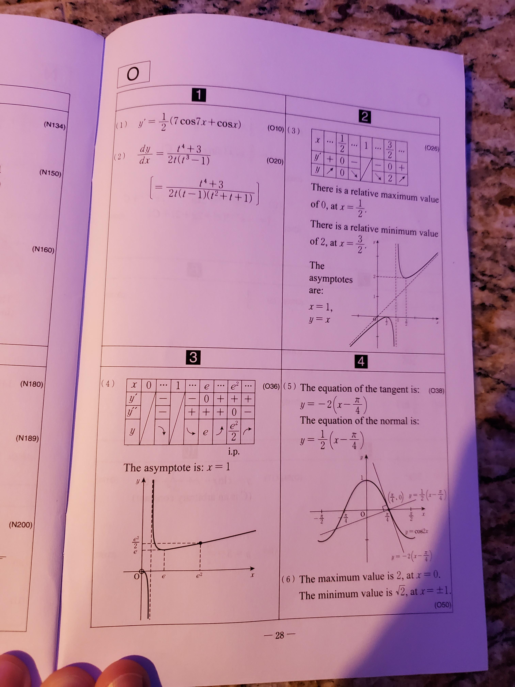
General Review Sheet 1
Contains an overview of core integration methods, limits, and trigonometric calculations. Excellent summary sheet for exam prep.
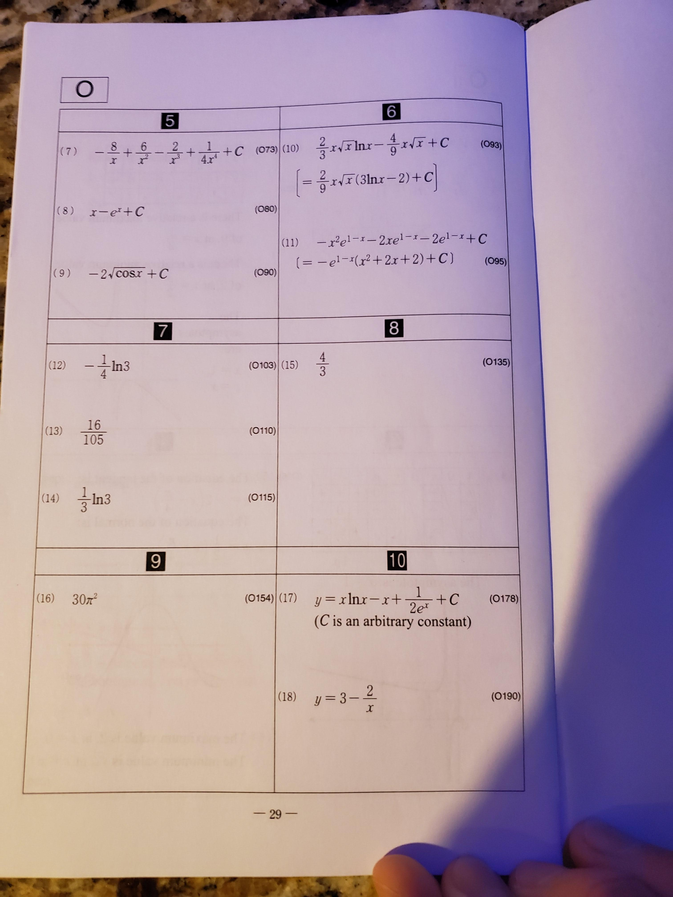
General Review Sheet 2
Provides summaries on differential equation forms, coordinate geometry curves (conic sections), and polar coordinate transformations.
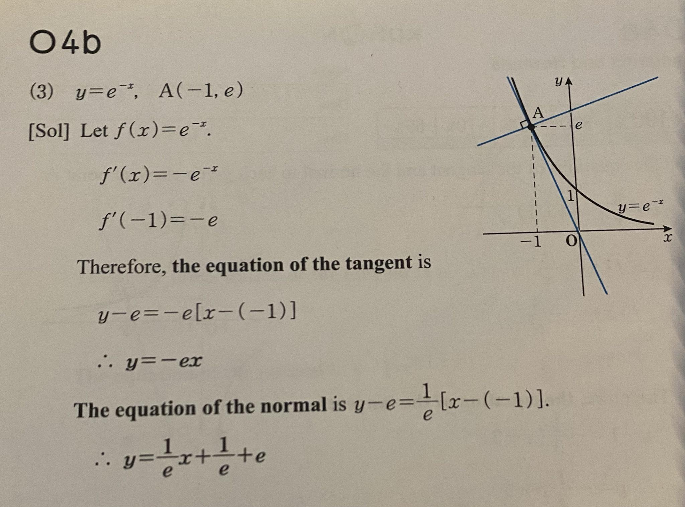
Question 1: Integration Basics
Topic: Definite integral of polynomial terms.
Evaluates fundamental integration rules and boundaries substitution.
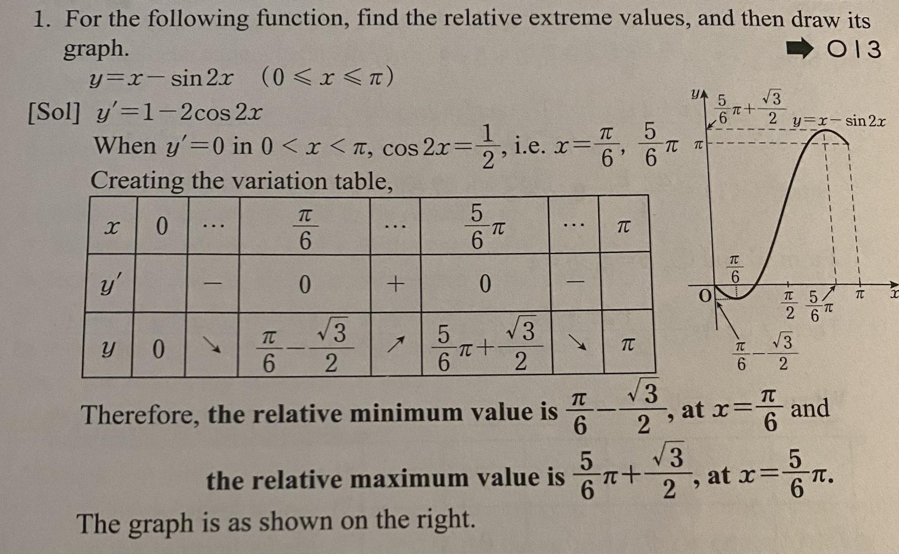
Question 2: Definite Integrals
Topic: Computing the area under a curve bounded by custom coordinate points.
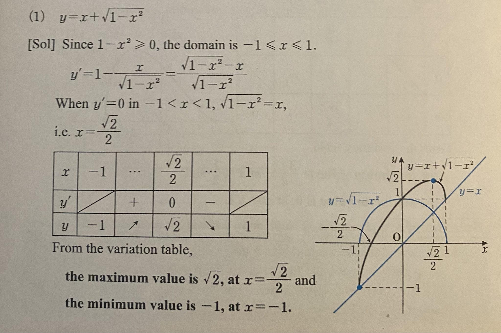
Question 3: Integration by Substitution
Topic: Indefinite integration with $u$-substitution.
Simplifying integrand structures.
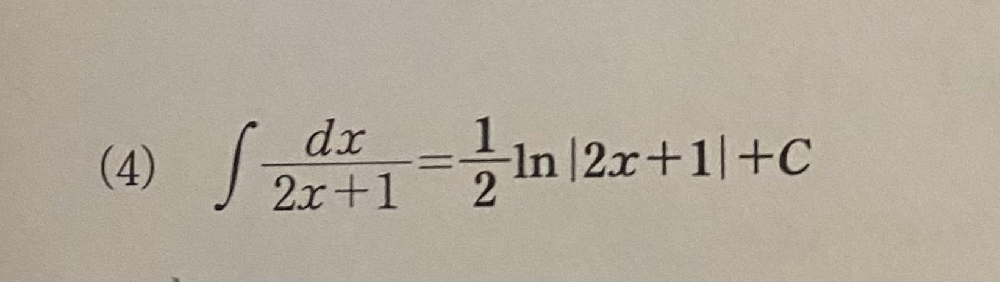
Question 4: Trigonometric Integration
Topic: Integration of trigonometric identities, powers of sine and cosine.
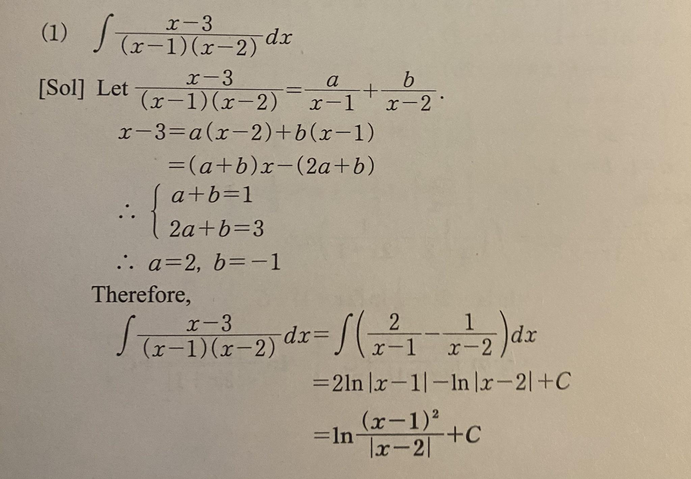
Question 5: Separable Differential Equations
Topic: Solving first-order separable differential equations: $g(y)dy = f(x)dx$.
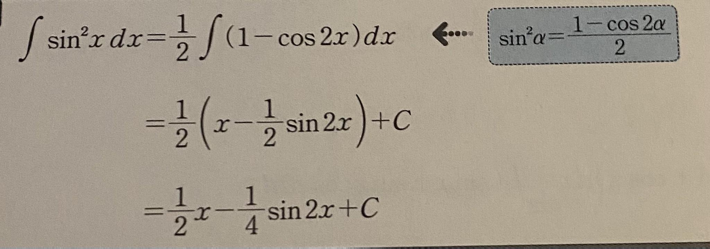
Question 6: Differential Equation Models
Topic: Applied differential models for growth, decay, and rate of change parameters.
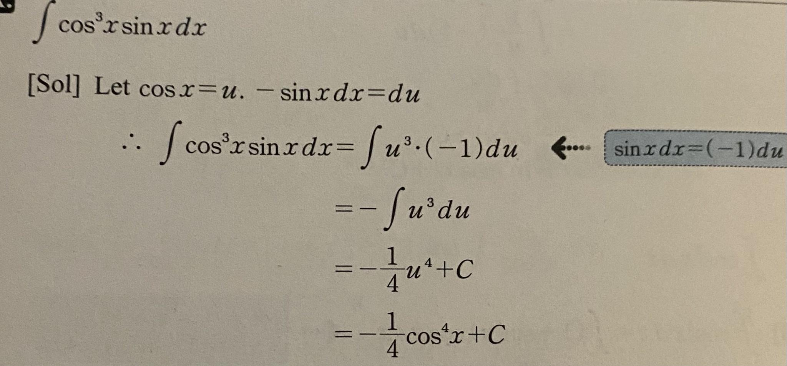
Question 7: Trigonometric Calculus
Topic: Derivatives and integrals involving advanced trigonometric operations.
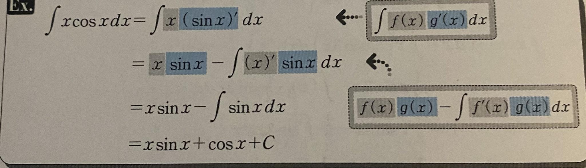
Question 8: Tangent Lines to Circles
Topic: Coordinate geometry: finding the equation of tangent lines on circular loci.
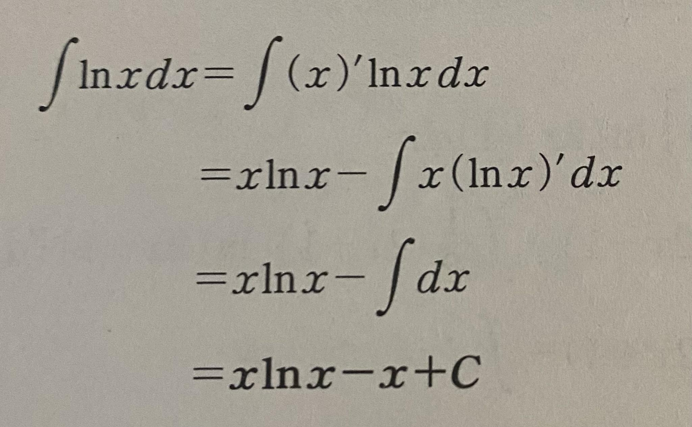
Question 9: Properties of Parabolas
Topic: Conic sections: expressing parabolas in standard vertex forms.
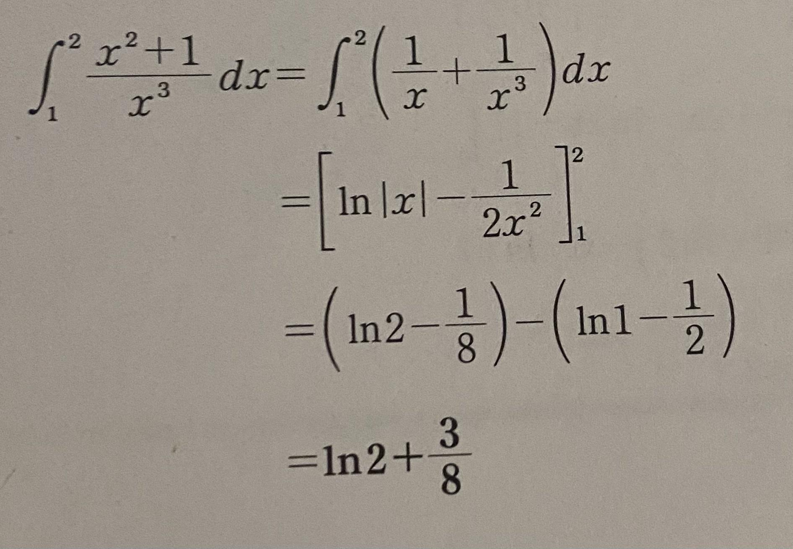
Question 10: Ellipse Geometry
Topic: Graphing ellipses, identifying semi-major and semi-minor axes, foci positions.
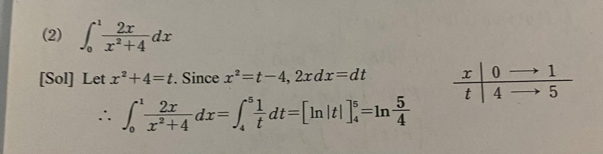
Question 11: Hyperbola Geometry
Topic: Graphing hyperbolas, identifying asymptotes and eccentricity coefficients.
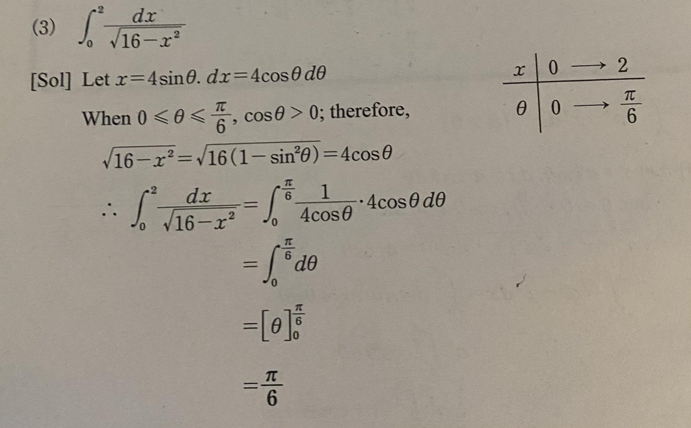
Question 12: Polar Form of Complex Numbers
Topic: Expressing standard complex numbers $z = a + bi$ in polar coordinate forms.
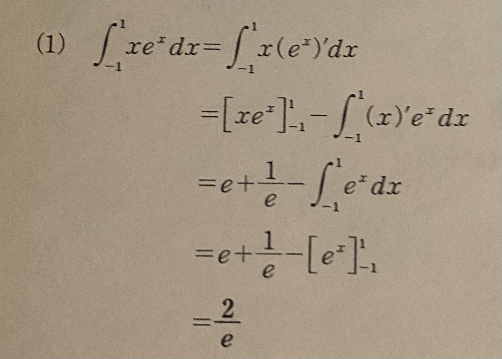
Question 13: De Moivre's Theorem
Topic: Applying De Moivre's formula for exponents and roots of complex vectors.
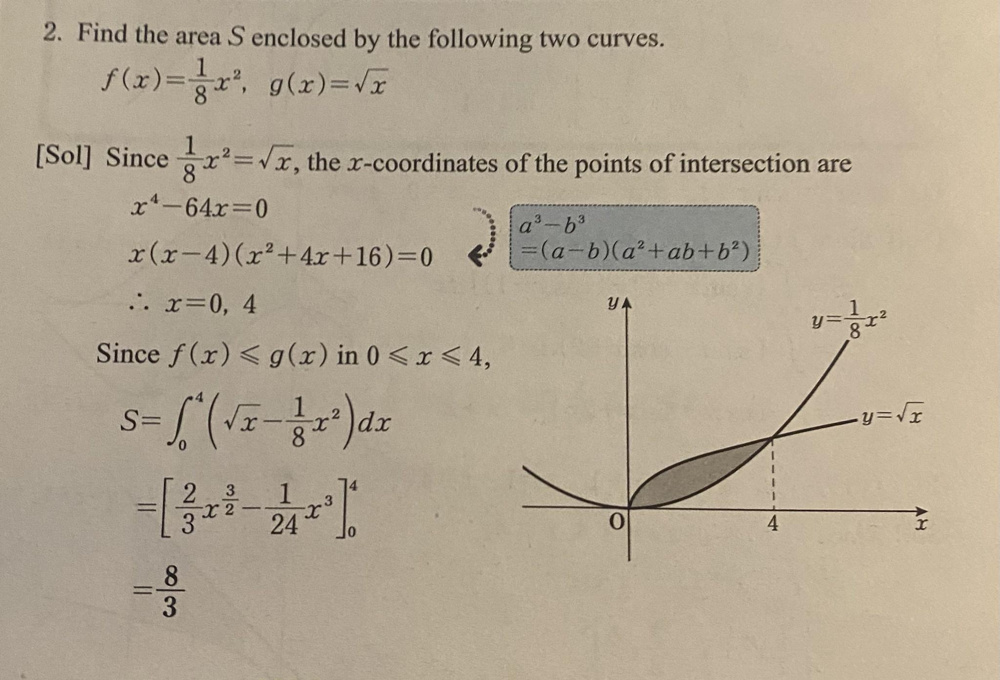
Question 14: Limits of Series
Topic: Finding limit conditions of infinite sequences and calculating boundaries convergence.
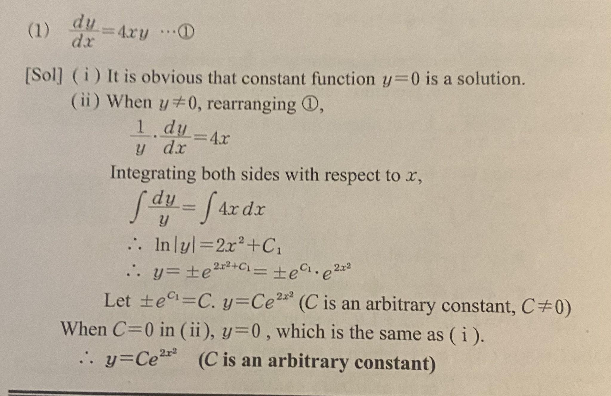
Question 15: Taylor Series
Topic: Expanding functions into infinite polynomials near given coordinates.